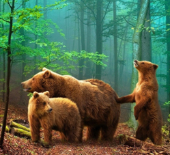
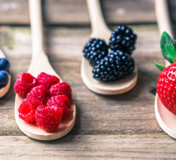

Швейцарские ученые в сотрудничестве с исследователями из СПбГУ и Сколково обнаружили в природе редкий пример перехода от непрерывных процессов к дискретным. Узор молодых глазчатых ящериц описывается системой уравнений Тьюринга, в то время как лабиринтообразная окраска взрослых особей строится по принципу дискретной модели клеточного автомата фон Неймана — чешуйки меняют цвет в зависимости от их окружения. Швейцарские ученые в сотрудничестве с исследователями из СПбГУ и Сколково обнаружили в природе редкий пример перехода от непрерывных процессов к дискретным. Узор молодых глазчатых ящериц описывается системой уравнений Тьюринга, в то время как лабиринтообразная окраска взрослых особей строится по принципу дискретной модели клеточного автомата фон Неймана — чешуйки меняют цвет в зависимости от их окружения. Швейцарские ученые в сотрудничестве с исследователями из СПбГУ и Сколково обнаружили в природе редкий пример перехода от непрерывных процессов к дискретным. Узор молодых глазчатых ящериц описывается системой уравнений Тьюринга, в то время как лабиринтообразная окраска взрослых особей строится по принципу дискретной модели клеточного автомата фон Неймана — чешуйки меняют цвет в зависимости от их окружения.
Узор молодых глазчатых ящериц
Швейцарские ученые в сотрудничестве с исследователями из СПбГУ и Сколково обнаружили в природе редкий пример перехода от непрерывных процессов к дискретным
- Черные с красными крапинками
- В полосочку с белыми крапинками
- Красивые с фиолетовыми полосками
- Матовые с вензелями
- Пурпурные с кораловыми солнышками
- Черные с красными крапинками
- В полосочку с белыми крапинками
- Красивые с фиолетовыми полосками
- Матовые с вензелями
- Пурпурные с кораловыми солнышками
Первый принцип модели клеточного автомата фон Неймана
Швейцарские ученые в сотрудничестве с исследователями из СПбГУ и Сколково обнаружили в природе редкий пример перехода от непрерывных процессов к дискретным. Узор молодых глазчатых ящериц описывается системой уравнений Тьюринга, в то время как лабиринтообразная окраска взрослых особей строится по принципу дискретной модели клеточного автомата фон Неймана — чешуйки меняют цвет в зависимости от их окружения. Швейцарские ученые в сотрудничестве с исследователями из СПбГУ и Сколково обнаружили в природе редкий пример перехода от непрерывных процессов к дискретным.
Второй принцип модели клеточного автомата фон Неймана
Швейцарские ученые в сотрудничестве с исследователями из СПбГУ и Сколково обнаружили в природе редкий пример перехода от непрерывных процессов к дискретным. Узор молодых глазчатых ящериц описывается системой уравнений Тьюринга, в то время как лабиринтообразная окраска взрослых особей строится по принципу дискретной модели клеточного автомата фон Неймана — чешуйки меняют цвет в зависимости от их окружения.
Третий принцип модели клеточного автомата фон Неймана
Швейцарские ученые в сотрудничестве с исследователями из СПбГУ и Сколково обнаружили в природе редкий пример перехода от непрерывных процессов к дискретным. Узор молодых глазчатых ящериц описывается системой уравнений Тьюринга, в то время как лабиринтообразная окраска взрослых особей строится по принципу дискретной модели клеточного автомата фон Неймана — чешуйки меняют цвет в зависимости от их окружения.
Результат исследования
Швейцарские ученые в сотрудничестве с исследователями из СПбГУ и Сколково обнаружили в природе редкий пример перехода от непрерывных процессов к дискретным. Узор молодых глазчатых ящериц описывается системой уравнений Тьюринга, в то время как лабиринтообразная окраска взрослых особей строится по принципу дискретной модели клеточного автомата фон Неймана — чешуйки меняют цвет в зависимости от их окружения. Швейцарские ученые в сотрудничестве с исследователями из СПбГУ и Сколково обнаружили в природе редкий пример перехода от непрерывных процессов к дискретным. Узор молодых глазчатых ящериц описывается системой уравнений Тьюринга, в то время как лабиринтообразная окраска взрослых особей строится по принципу дискретной модели клеточного автомата фон Неймана — чешуйки меняют цвет в зависимости от их окружения. Швейцарские ученые в сотрудничестве с исследователями из СПбГУ и Сколково обнаружили в природе редкий пример перехода от непрерывных процессов к дискретным. Узор молодых глазчатых ящериц описывается системой уравнений Тьюринга, в то время как лабиринтообразная окраска взрослых особей строится по принципу дискретной модели клеточного автомата фон Неймана — чешуйки меняют цвет в зависимости от их окружения. Швейцарские ученые в сотрудничестве с исследователями из СПбГУ и Сколково обнаружили в природе редкий пример перехода от непрерывных процессов к дискретным. Узор молодых глазчатых ящериц описывается системой уравнений Тьюринга, в то время как лабиринтообразная окраска взрослых особей строится по принципу дискретной модели клеточного автомата фон Неймана — чешуйки меняют цвет в зависимости от их окружения. Швейцарские ученые в сотрудничестве с исследователями из СПбГУ и Сколково обнаружили в природе редкий пример перехода от непрерывных процессов к дискретным. Узор молодых глазчатых ящериц описывается системой уравнений Тьюринга, в то время как лабиринтообразная окраска взрослых особей строится по принципу дискретной модели клеточного автомата фон Неймана — чешуйки меняют цвет в зависимости от их окружения. Швейцарские ученые в сотрудничестве с исследователями из СПбГУ и Сколково обнаружили в природе редкий пример перехода от непрерывных процессов к дискретным. Узор молодых глазчатых ящериц описывается системой уравнений Тьюринга, в то время как лабиринтообразная окраска взрослых особей строится по принципу дискретной модели клеточного автомата фон Неймана — чешуйки меняют цвет в зависимости от их окружения.